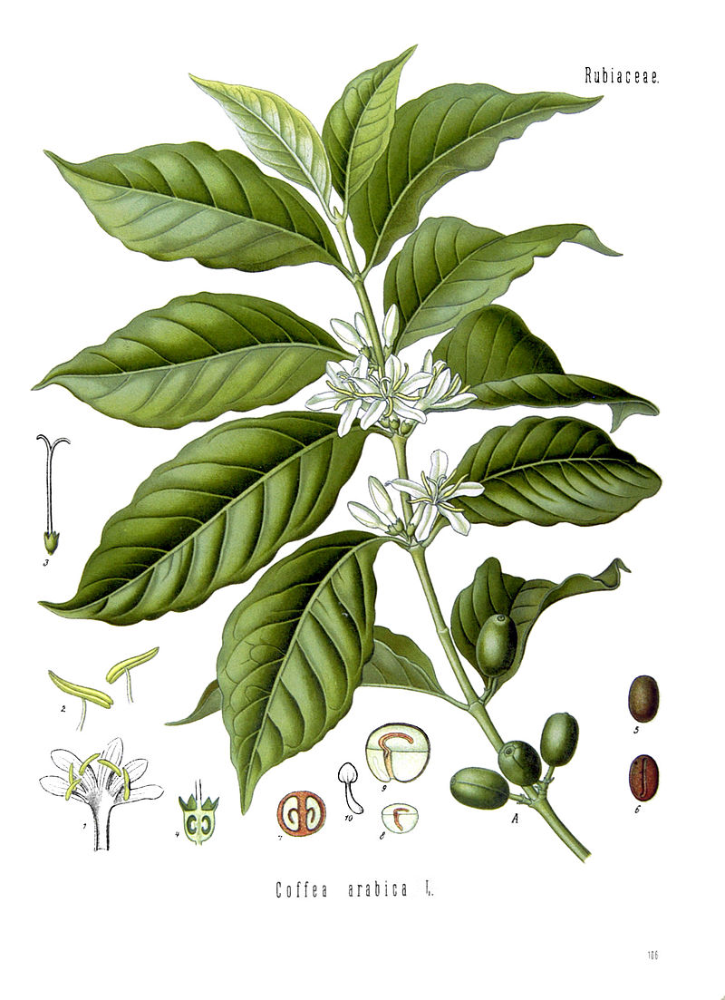
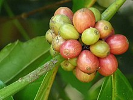
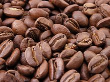

Seattle Coffee & Real Estate
By Tommy Surjadi - A Coffee Enthusiast & Realtor (Washington)- Coldwell Banker Bain. Partner with the Best in the World.
"World center for coffee & coffee roasting: Seattle, Washington"

Coffee & Coffee Beans
Coffee is a brewed drink prepared from roasted coffee beans, the seeds of berries from certain Coffea species. The word "coffee" entered the English language in 1582 via the Dutch "koffie", borrowed from the Ottoman Turkish "kahve". The history of coffee dates back to the 15th century, and possibly earlier with a number of reports and legends surrounding its first use. The native (undomesticated) origin of coffee is thought to have been Ethiopia, with several mythical accounts but no solid evidence. The earliest substantiated evidence of either coffee drinking or knowledge of the coffee tree is from the early 15th century, in the Sufi monasteries of Yemen, spreading soon to Mecca and Cairo. By the 16th century, it had reached the rest of the Middle East, South India, Persia, Turkey, Horn of Africa, and northern Africa. Coffee then spread to the Balkans, Italy and to the rest of Europe, to South East Asia and then to America, despite bans imposed during the 15th century by religious leaders in Mecca and Cairo, and later by the Catholic Church. As of 2016, Brazil was the leading grower of coffee beans, producing one-third of the world total, followed by Vietnam, Colombia and Indonesia. Starbucks imports more than half of its coffee from Indonesia. According to legend, ancestors of today's Oromo people in a region of Kaffa in Ethiopia were believed to have been the first to recognize the energizing effect of the coffee plant, though no direct evidence has been found indicating where in Africa coffee grew or who among the native populations might have used it as a stimulant or even known about it, earlier than the 17th century. The story of Kaldi, the 9th-century Ethiopian goatherd who discovered coffee when he noticed how excited his goats became after eating the beans from a coffee plant, did not appear in writing until 1671 and is probably apocryphal.
Arabica vs Robusta
Coffee plants are now cultivated in over 70 countries, primarily in the equatorial regions of the Americas, Southeast Asia, India, and Africa. The two most commonly grown are Arabica and Robusta. Once ripe, coffee berries are picked, processed, and dried. Dried coffee seeds (referred to as "beans") are roasted to varying degrees, depending on the desired flavor. Roasted beans are ground and then brewed with near-boiling water to produce the beverage known as coffee. Coffee is darkly colored, bitter, slightly acidic and has a stimulating effect in humans, primarily due to its caffeine content.
  Coffea arabica is predominantly self-pollinating, and as a result, the seedlings are generally uniform and vary little from their parents. Coffee from this western-most island in Indonesia is intriguing and complex, due to the large number of small-holder producers and the unique "giling basah" (wet hulling) processing technique they use. At the green bean stage, coffee from this area has a distinctive bluish colour, which is attributed to processing method and lack of iron in the soil. Coffees from Sumatra are known for smooth, sweet body that is balanced and intense. Depending on the region, or blend of regions, the flavours of the land and processing can be very pronounced. Notes of cocoa, tobacco, smoke, earth and cedar wood can show well in the cup. Occasionally, Sumatran coffees can show greater acidity, which balances the body. This acidity takes on tropical fruit notes and sometimes an impression of grapefruit or lime. Mandheling is a trade name, used for arabica coffee from northern Sumatra. It was derived from the name of the Mandailing people, who produce coffee in the Tapanuli region of Sumatra. Mandheling coffee comes from Northern Sumatra, as well as Aceh.
Living in Seattle
Seattle is a seaport city on the west coast of the United States. The city is situated between Puget Sound and Lake Washington, about 100 miles (160 km) south of the Canada–United States border. A major gateway for trade with Asia, Seattle is the fourth-largest port in North America in terms of container handling as of 2015. "Seattle" was named after and in honor of Chief Si'ahl of the local Duwamish and Suquamish tribes. According to U.S. Census data released in 2018, the Seattle metropolitan area’s population stands at 3.87 million, and ranks as the 15th largest in the United States.
Seattle & Coffee
Seattle is regarded as a world center for coffee. Most of people living in Seattle, known as Seattleites, are coffee enthusiasts; the city is known for its prominent coffee culture. People in Seattle consume more coffee than in any other American city; one study stated that there are 35 coffeeshops per 100,000 residents and that Seattle people spend an average of $36 a month on coffee. It is nearly impossible to walk past a single block in a commercial area in Seattle without walking past at least one coffee shop. Coffee drinkers can get coffee at a local sidewalk stand, parking lot, tiny coffee houses, big coffee houses, drive-through, and even delivery.
Please select your destination:
Join my mailing list:
Please click on the area of your choice:
Roasters
Seattle is home to several coffee roasters. Starbucks is Seattle's largest coffee retailer. It was founded in 1971 in Pike Place Market as a roaster, but only later became an espresso bar. In 1984 ownership of the company changed and Howard Schultz led a massive international expansion of the company. In 2003, Starbucks acquired pioneering Seattle roaster Seattle's Best Coffee. Others include Tullys' and Stumptown.
Mobile: 206-765-7866 Email: tommysurjadi@gmail.com
Opening hours to everyday.
Address: 1151 NW Sammamish Road Suite 103, Issaquah WA 98027"PASSION TO ASSIST WITH YOUR REAL ESTATE NEEDS"
A multi-lingual licensed realtor with over 20 years of finance, wealth management & real estate experience. Covering Bellevue, Kirkland, Redmond, Issaquah, Sammamish, Providence Point and other greater Seattle area.
"Tommy helped us finding our dream home easier than we initially thought. We were impressed by his professionalm and diligence. Highly recommended." KM.
A member of Washington Association of Realtors and National Association of Realtors, Northest Multiple Listing Services and Asian Real Estate Association of America.